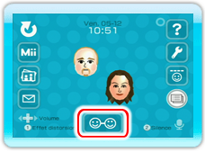
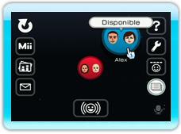
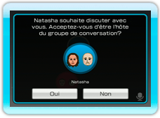
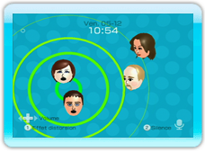

Pour commencer une conversation, suivez la procédure expliquée ci-dessous. Quatre consoles Wii au maximum peuvent participer simultanément au même groupe de conversation.
11 |
Commencer une conversation |
|
Note: Si la personne avec qui vous souhaitez communiquer n’est pas connectée sur la Chaîne Wii Speak, vous ne pouvez pas l’inviter à commencer une conversation. Vous pouvez convenir à l'avance d'une heure de rendez-vous.
Dans le salon de conversation, sélectionnez .
 Accédez à l’accueil et sélectionnez l'ami Wii avec qui vous souhaitez commencer une conversation. Pour participer à une conversation déjà en cours, vous devez demander à l'hôte du groupe de conversation l'autorisation de rejoindre la conversation (voir « 12. Rejoindre une conversation »). Note: Appuyez sur
Note: Une fois que vous avez démarré la Chaîne Wii Speak, un certain temps peut s’écouler avant que vous et vos amis Wii n’apparaissiez connectés aux yeux des autres.
Lorsque vous sélectionnez un ami Wii, un message s'affiche pour confirmer si vous souhaitez inviter cette personne à commencer une conversation. Au bas de l'écran de confirmation, sélectionnez Oui.


Un écran de confirmation s'affiche alors chez cette personne pour l'informer que vous l'invitez à commencer une conversation avec vous. Votre ami Wii peut répondre en sélectionnant Oui ou Non pour accepter ou décliner votre demande. Si vous souhaitez ajuster le volume sonore de votre téléviseur alors que vous êtes déjà en conversation, appuyez à gauche ou à droite sur . Si vous utilisez la télécommande de votre téléviseur pour le faire, vous risquez d'entendre de l’écho ou d’autres distorsions du son. |